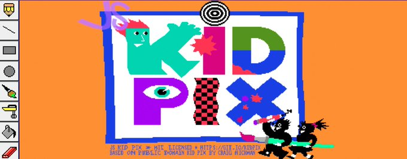

Główna
Przeglądaj
Powiadomienia
Wiadomości
Zakładki
Listy
Profil
Więcej
WiadomościBliskoCiebie24
@WBC24 - 14 Lip
Rok 2020 minął szybko, dlatego postanowiliśmy zrobić podsumowanie 2020 w „pigułce”.
Link w komentarzu
#podsumowanie2020
JavaScriptDaily
@JSDaily - 07 Lip
Kid Pix as a JavaScript App: https://kidpix.app (A classic kid focused drawing tool from 1989 has been brought to the Web!)
LogoDesignIdea
@LDesign - 1g.
Eagle
Najpopularniejsze dla Ciebie
Rząd - Trendy
Taliban
Tweety: 2,5 tys.
Komputery - Trendy
HTML
Tweety: 3,4 tys.
Sport - Trendy
Lebron James
Tweety: 1,3 mln.
Muzyka - Trendy
Tadeusz Nalepa
Tweety: 2,5 tys.
Najpopularniejsze w Polska
Taliban
Tweety: 2,5 tys.
Pokaz więcej